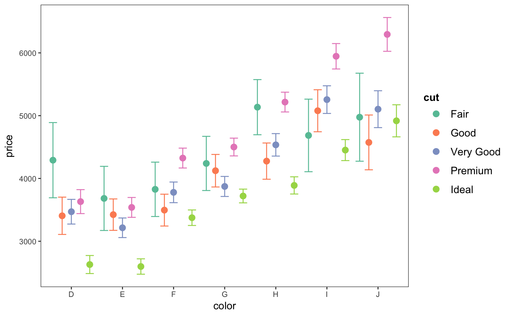
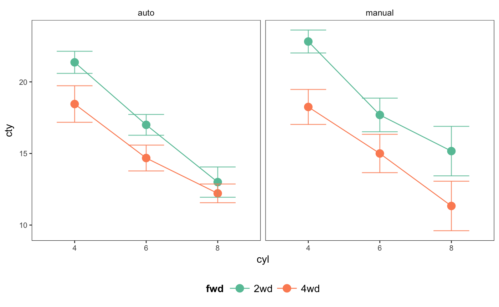

`cat_plot` is a complementary function to [interact_plot()] that is designed for plotting interactions when both predictor and moderator(s) are categorical (or, in R terms, factors).
cat_plot(model, pred, modx = NULL, mod2 = NULL, geom = c("dot", "line", "bar", "boxplot"), interval = TRUE, plot.points = FALSE, point.shape = FALSE, vary.lty = FALSE, centered = NULL, int.type = c("confidence", "prediction"), int.width = 0.95, outcome.scale = "response", set.offset = 1, x.label = NULL, y.label = NULL, main.title = NULL, legend.main = NULL, color.class = "Set2")
| model | A regression model of type |
|---|---|
| pred | A categorical predictor variable that will appear on the x-axis. |
| modx | A categorical moderator variable. |
| mod2 | For three-way interactions, the second categorical moderator. |
| geom | What type of plot should this be? There are several options here since the best way to visualize categorical interactions varies by context. Here are the options: * `"dot"`: The default. Simply plot the point estimates. You may want to use `point.shape = TRUE` with this and you should also consider `interval = TRUE` to visualize uncertainty. * `"line"`: This connects observations across levels of the `pred` variable with a line. This is a good option when the `pred` variable is ordinal (ordered). You may still consider `point.shape = TRUE` and `interval = TRUE` is still a good idea. * `"bar"`: A bar chart. Some call this a "dynamite plot." Many applied researchers advise against this type of plot because it does not represent the distribution of the observed data or the uncertainty of the predictions very well. It is best to at least use the `interval = TRUE` argument with this geom. * `"boxplot"`: This geom plots a dot and whisker plot. These can be useful for understanding the distribution of the observed data without having to plot all the observed points (especially helpful with larger data sets). **However**, it is important to note the boxplots are not based on the model whatsoever. |
| interval | Logical. If |
| plot.points | Logical. If |
| point.shape | For plotted points---either of observed data or predicted values with the "point" or "line" geoms---should the shape of the points vary by the values of the factor? This is especially useful if you aim to be black and white printing- or colorblind-friendly. |
| vary.lty | Should the resulting plot have different shapes for each
line in addition to colors? Defaults to |
| centered | A vector of quoted variable names that are to be
mean-centered. If |
| int.type | Type of interval to plot. Options are "confidence" or "prediction". Default is confidence interval. |
| int.width | How large should the interval be, relative to the standard error? The default, .95, corresponds to roughly 1.96 standard errors and a .05 alpha level for values outside the range. In other words, for a confidence interval, .95 is analogous to a 95% confidence interval. |
| outcome.scale | For nonlinear models (i.e., GLMs), should the outcome
variable be plotted on the link scale (e.g., log odds for logit models) or
the original scale (e.g., predicted probabilities for logit models)? The
default is |
| set.offset | For models with an offset (e.g., Poisson models), sets a offset for the predicted values. All predicted values will have the same offset. By default, this is set to 1, which makes the predicted values a proportion. See details for more about offset support. |
| x.label | A character object specifying the desired x-axis label. If
|
| y.label | A character object specifying the desired x-axis label. If
|
| main.title | A character object that will be used as an overall title
for the plot. If |
| legend.main | A character object that will be used as the title that
appears above the legend. If |
| color.class | Any palette argument accepted by
|
The functions returns a ggplot object, which can be treated
like a user-created plot and expanded upon as such.
This function provides a means for plotting conditional effects
for the purpose of exploring interactions in the context of regression.
You must have the
package ggplot2 installed to benefit from these plotting functions.
The function is designed for two and three-way interactions. For
additional terms, the
effects package may be better suited to the task.
This function supports nonlinear and generalized linear models and by
default will plot them on
their original scale (outcome.scale = "response").
While mixed effects models from lme4 are supported, only the fixed
effects are plotted. lme4 does not provide confidence intervals,
so they are not supported with this function either.
Note: to use transformed predictors, e.g., log(variable),
put its name in quotes or backticks in the argument.
Info about offsets:
Offsets are partially supported by this function with important limitations. First of all, only a single offset per model is supported. Second, it is best in general to specify offsets with the offset argument of the model fitting function rather than in the formula. If it is specified in the formula with a svyglm, this function will stop with an error message.
It is also advised not to do any transformations to the offset other than the common log transformation. If you apply a log transform, this function will deal with it sensibly. So if your offset is a logged count, the exposure you set will be the non-logged version, which is much easeir to wrap one's head around. For any other transformation you may apply, or if you apply no transformation at all, the exposures used will be the post-tranformation number (which is by default 1).
library(ggplot2) fit <- lm(price ~ cut * color, data = diamonds) cat_plot(fit, pred = color, modx = cut, interval = TRUE)# 3-way interaction ## Will first create a couple dichotomous factors to ensure full rank mpg2 <- mpg mpg2$auto <- "auto" mpg2$auto[mpg2$trans %in% c("manual(m5)", "manual(m6)")] <- "manual" mpg2$fwd <- "2wd" mpg2$fwd[mpg2$drv == "4"] <- "4wd" ## Drop the two cars with 5 cylinders (rest are 4, 6, or 8) mpg2 <- mpg2[mpg2$cyl != "5",] ## Fit the model fit3 <- lm(cty ~ cyl * fwd * auto, data = mpg2) # The line geom looks good for an ordered factor predictor cat_plot(fit3, pred = cyl, modx = fwd, mod2 = auto, geom = "line", interval = TRUE)